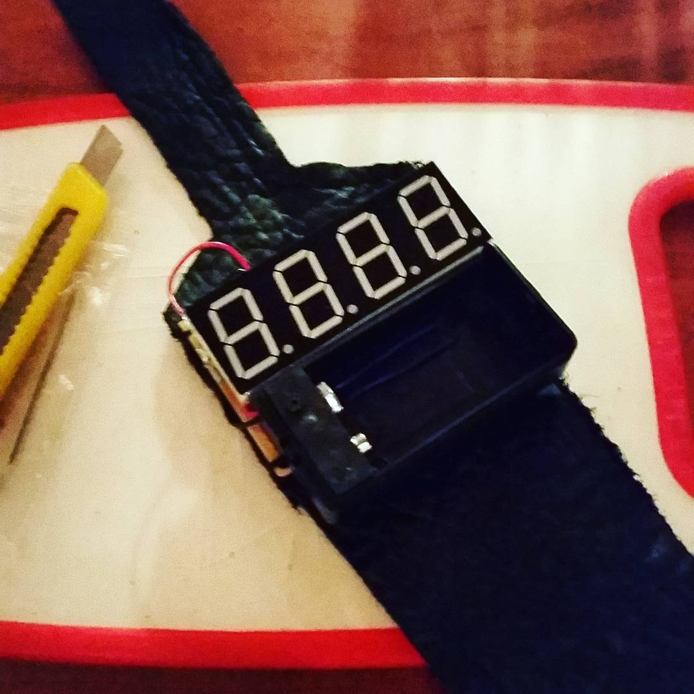

Welcome
My name is Ethan A. Pinsker and this is my web page. If we've met before, thank you for taking the time to learn about my professional passions. Else, if this is how I'm meeting you, I hope you are inspired by what inspires me!
Current Work
Since January 2017 I have been employed by Bay Area Environmental Research Institute, to be a researcher for NASA Ames Research Center, Earth Science Division. The group I do research for at NASA is called the Airborne Science Program. Two instruments my team work on the most are the MASTER and eMAS Spectrometers. These instruments use infared imaging sensors to study Earth's surface properties and usually fly on a ER-2 aircraft. My daily tasks cover much more than research, my responsibilities include:
Iridium modem integration for NASA Airborne Science Data and Telemetry System
I am currently working with another engineer on our team to construct and test the next generation of a science instrument that utilizes iridium sat-phone modems for navigation data recording. I have hardware and software tasks for this instrument. Following a schematic and machined enclosure, I had to construct the instrument so the modems and other essential parts would logistically fit while also properly crimping the wire connections to thier appropriate mate. As for the software I use AT commands in Minicom to configure and troubleshoot the modems on this instrument. I love this kind of work because I am participating in a new innovation for airborne science.
Board design in Altium Designer
Sometimes following a schematic other times using my own designs, I place components on the board and route their nets so they can be fabricated through a vendor. I also test all of the boards that we receive from vendors. Some boards I route have hundreds of components or require components that are not in any Altium Library. If I can not find the schematic symbol or footprint for a part, I have to make my own. If you also have a copy of Altium 17 or later, use these links if you want to download and take a look at some of the Symbols and Footprints I have made in Altium. Routing and solving the best way to place components on a board is fulfilling to me when I see the finished physical product that I fabricated.
Lead Firmware Designer
I design the firmware for our ARM7 TDMI microcontrollers that we use on multiple instruments. These microcontrollers use RS-422 serial communication with the instrument they operate on. C is one of my favorite languages to code in; if you want see some more work I have done in C, you should check out my previous work.
PostgreSQL database design and Ground station interface with HTML5/Javascript/php (need to put in html and postgres stuff for chart)
I am in charge making changes to each of our flight databases. I have also made an interface with chart.js so anyone on our network can monitor some of our instrument's parameters during a flight. Check out the simplified version below! This is another great part of my job because to a professional degree, I get to show some of my creative side!
Education
I received both of my bachelor degrees at the University of California, Santa Cruz. I wanted to graduate with a background in software and hardware so I majored in Network & Digital Technology and Electrical Engineering. Working in either discipline satisfies me, and being a part of how they weave together makes me proud of what I accomplish.
Network and Digital Technology
My senior design project for this major was to design a way to setup a duplex 256 AES encryption link using only common off the shelf parts (COTS). I was partnered with two other engineering students in my class who had similar backgrounds. Our final design relied on using a AMW006-A1U 'Hopper -U' to send the packets and Raspberry Pi 3 to interpret the packets.
Electrical Engineering
My senior design project for this major was an annually held class called Intro to Mechatronics. I was partnered with two other engineering students on a six week project to build bot that could navigate through a maze autonomously and retreive a disk using bump sensors, tape sensors, an infrared receiver and a detector for a track wire that was set along the perimeter of the maze. Check out this video of our bot, all of the software was written by us in C on a PIC32MX microcontroller:
Publication & Other
This section is for any other work I'd like to mention. May or may not be work or engineering related, but they are things that I'm proud of.
Publication
In 2016, at my first job at NASA, I worked on a team to refurbish RQ-11 UAV aircrafts for scientific instrumentation. During my time on this project we made some discoveries on using 3D printing and scanning software with the aircraft. We documented what we found and our paper is now published (I'm a co-author) by The International Society for Optics and Photonics (SPIE). You can purchase a copy here.
Arduino Watch
I built a watch with an Ardunio micro and a 4 digit 7 hex display. The watch was powered by a single 9-Volt battery which was linearly regulated. Although bulky, it was bright enough to act as a 24/7 flashlight too. I've made some revisions since the picture shown here, the most current revision is made to operate as a desk clock.
Art
I like to draw goofy things and write hard sci-fi too. If you want to see some of the sketches I've done, you can check them out here. I haven't published any of my stories, I'm currently working on three at the moment.
Contact
If you want a copy of my resume you can download it here. Thanks for taking the time to read my page. I appreciate your interest in some of the things that make me interesting.